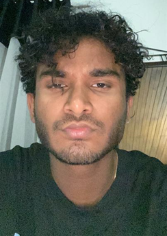

Nipun Yasas Herath Mudiyanselage

Student Number: s3839956
Personal Information
I finished year 12 in 2019 and am currently in my first year at RMIT enrolled in the Bachelor of IT.
I enjoy playing video games and I almost always spend time on either Netflix or YouTube before going to sleep.
Rugby is my favorite sport but I haven’t watched any matches in a long time.
My interest in IT first began after seeing a documentary about Google headquarters on the discovery channel.
As a young child, I was drawn towards the working environment and the easy-going nature of Googleplex.
After having the opportunity to talk to some family friends that have been working in the IT industry I have grown an interest in cybersecurity.
An interest that is also fuelled by my childhood dream to one day be an employee at Google.
I have been lucky enough to be employed by the NCR corporation as an agent to work on a project to remotely update the software of some of their customers.
I have been enjoying this great opportunity and believe I will gain experience that'll help me when getting employed in the future.
Personality Tests
Myers-Briggs Test
The completion of the Myers Briggs type test has provided me with results showing me that I am an extraverted and assertive individual.
I tend to direct our mental energy intuitively and are more likely to make decisions based on feelings. However, when approaching work I would make decisions based on judgment.
Learning Type Test
After the completion of the learning type test, it is evident that I am a tactile learner that prefers to learn by gaining hands-on experience rather than visual or auditory learning.
However, I can learn through those methods yet not as effectively.
Creativity Test
After the completion of the creativity test, I was able to realise that I like to follow a deliberate pathway rather than a spontaneous one.
Beneficial Team Attributes
Through my extraverted and assertive energy, I’m able to suggest new ideas spontaneously and provide the team with unique aspects on new developments.
Teammates that have a slightly different personality wouldn’t be a problem as I would also help balance and encourage everyone in the team to work together